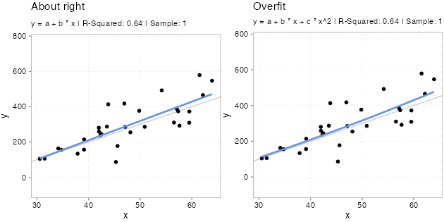
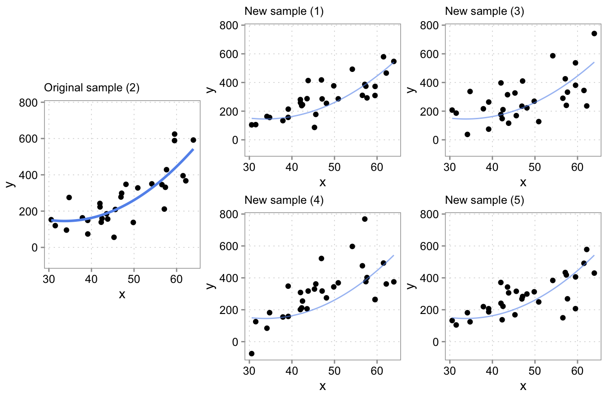
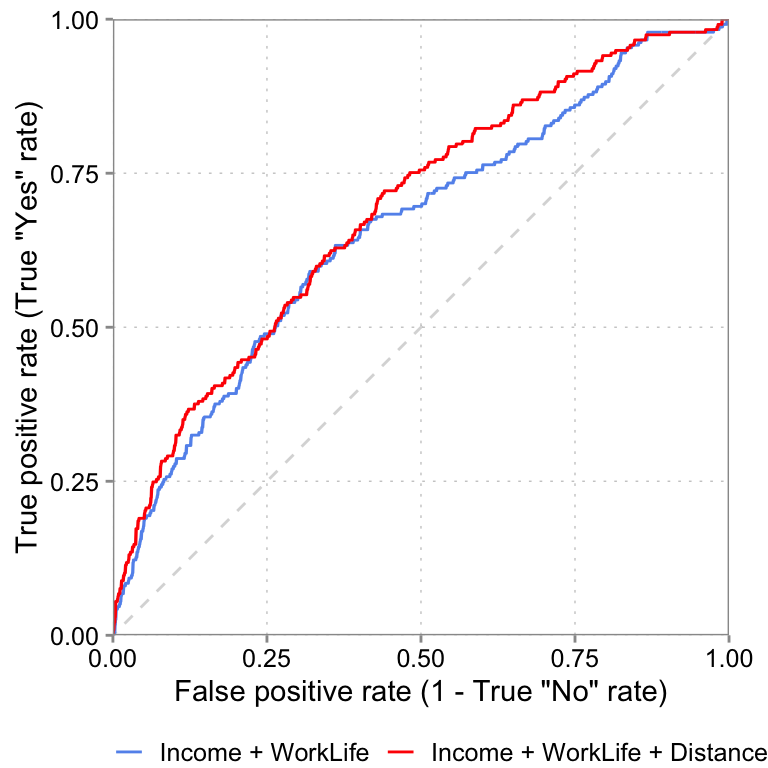
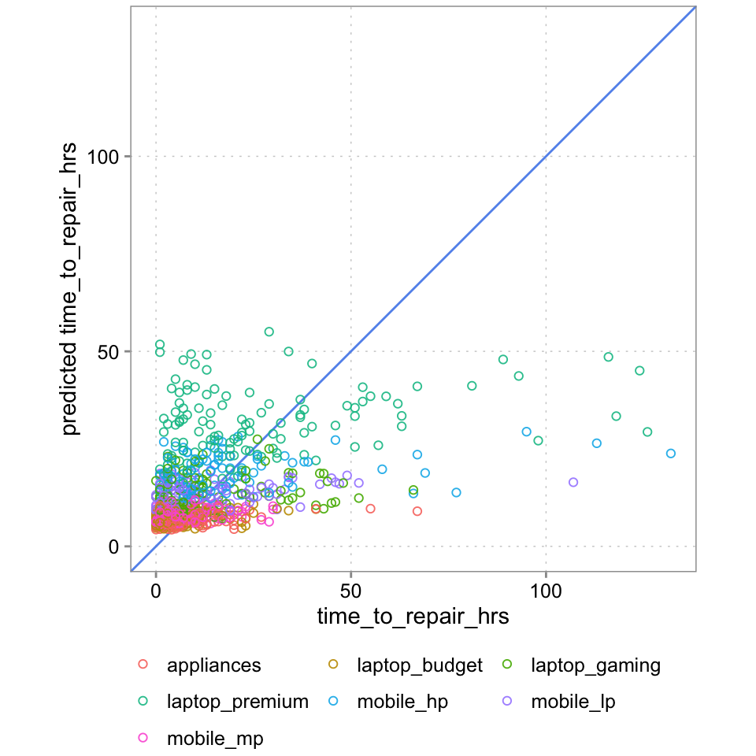
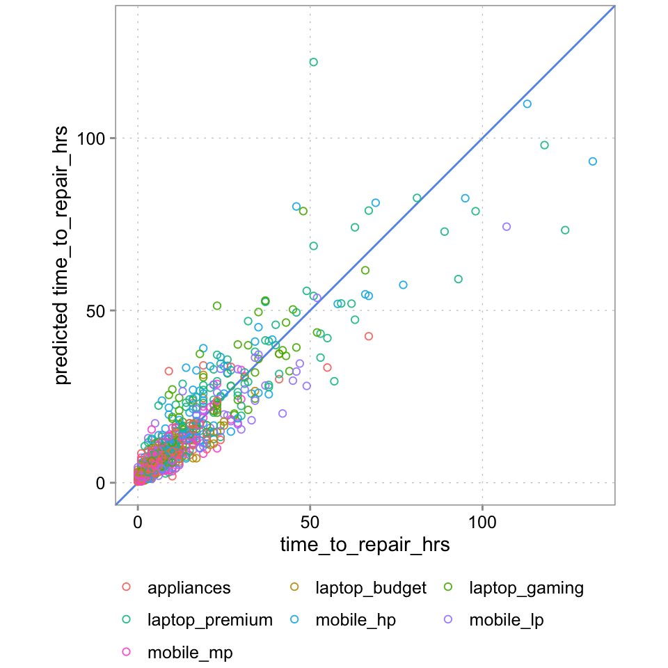
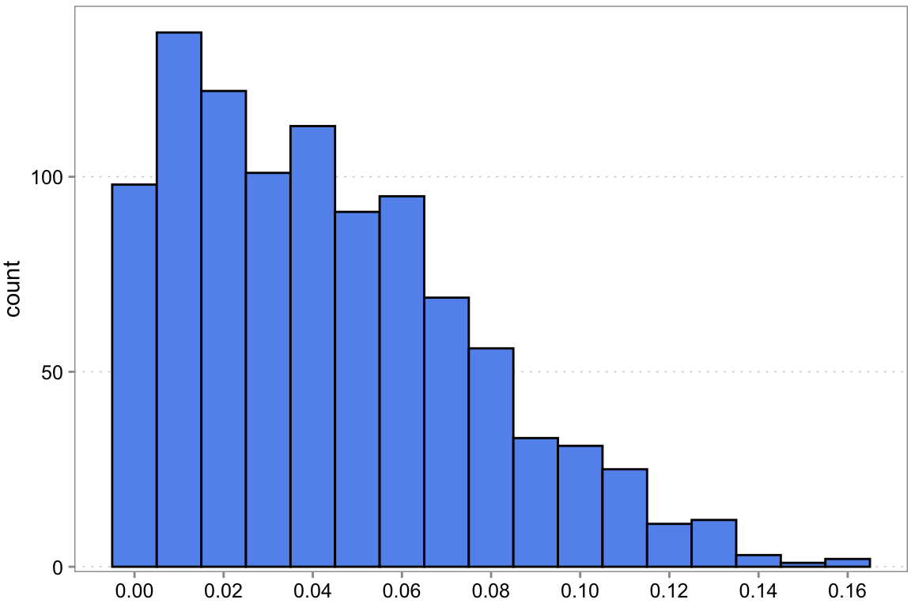

5 Predictive Analytics
5.1 Learning goals
- Learn how to do principled data-based forecasting for decision making
- Evaluate a prediction models quality based on standard metrics and theory
5.2 Scope of this chapter
In the language of machine learning, this chapter is about supervised learning.1 Supervised learning is what we mostly think of as prediction models, where we have inputs (called independent variables, features, or predictors) and have one or more outputs (often called, responses, dependent variables, or outcome variables). Depending on the type of the outcome variable, two types of prediction (or learning) problems are distinguished: regression problems (predicting a continuous response) and classification problems (predicting a binary or categorical response). Both categories feature an ever expanding set of models and algorithms. We do not have the time to cover this expanding model space in any way that does it justice. That would be a course (or two) by itself. Instead, our goal for this chapter is to provide you with the foundation of predictive analysis and some practice with generalized linear regression models. Even given the plethora of more advanced algorithms, these are incredibly useful model families for most applications. You will be surprised how far the standard approaches will carry you.
After introducing the basic concepts about the sources of prediction errors, we will discuss how to assess whether a particular model predicts well. The trend towards machine learning and AI has brought with it a rich body of knowledge on how to assess the prediction quality of even complex models and we will draw on more recent advances in this field. Once you know how to assess model performance, we will showcase a full prediction pipeline and close with an extension: a brief treatment of the powerful toolkit enabled by penalized regression models.
5.3 What is predictive analysis?
Predictive analysis is asking questions, such as “What will happen?”, “What is the most likely response, given a set of conditions?”, etc. It encompasses a huge and growing field of prediction and forecasting models—from classic time-series models to the most complex large language models. In this chapter we will focus mostly on the core concepts behind data-driven predictions. We will explain what exactly the issues are that make extrapolating from a historical sample to (yet) unseen data so difficult. These issues are quite broad and but provide a good foundation not only for designing useful predictive analyses, but also for a basic understanding of modern AI models behind driverless cars, generative Art, or generative text models, such as ChatGPT. At their heart, all of these applications are prediction models.
It is important to understand that predictive analysis has a different goal than diagnostic analysis. Thus it also has different criteria to assess model quality. In Chapter 4, we stressed that diagnostic model quality can ultimately only be assessed via theory (your mental model). That is because diagnostic analysis asks “Why?” questions. Predictive analysis is less strict. You can easily have a prediction model that provides quite accurate forecasts without being even close to modelling causal relations. For example, the developers of the by now infamous early “Google Flu Trends” model, which predicted flu outbreaks using Google search terms, reported weeding out highly predictive but unrelated search terms related to basketball (Ginsberg et al. 2009). Basketball terms were highly predictive of flu outbreaks, because the main US basketball season is March, which is also the main flu season. So basketball search terms were just predicting season, not causally related to flu outbreaks itself. (See also the Lazer et al. 2014 discussion of GFT as a parable for traps utilizing big data.). Still, while weeding out search terms to basketball helps making the model more robust, a predictive model does not need to isolate causal relations. Consider a somewhat trivial example similar to the one used in Chapter 4 (Figure 4.8). Imagine we are interest in predicting next week’s retail store sales and have as inputs the number of staff and number of purchases in the previous week. If more store staff is associated with more purchases, including both number of purchases and number of staff is fine for prediction purposes. But you would not include number of purchases into your model if you would run a diagnostic analysis of the importance of the number of staff for sales. That is because part of the expected effect of staff on sales is via more purchases. Again, the point here is that models for predictive purposes and diagnostic purposes have different but equally important goals. Thus, they need to be designed based on different criteria.
5.4 The source of prediction errors
5.4.1 Overfitting vs underfitting
In the previous section we argued that models for diagnostic analysis and predictive analysis are not constructed using the same criteria. In Chapter 4, we argued that just adding variables is a bad idea, as adding a variable to your model can sometimes bias the coefficient that you are after. But in predictive analysis we do not care so much about the coefficients–about understanding how the determinants of our outcome of interest \(y\) relate–only that they are determinants of the outcome. So, is it okay to just throw all of the hypothesized determinants into a model? The answer is still no. Here is why.
By adding more variables, a model becomes more complex, and will often better explain variation in the sample that the model is fitted on. But the reason might not be that the model actually predicts (new data) better. Instead, the more variables (parameters) a model has, the more likely it is that a newly included variable was chosen in error and accidentally fits noise. This issue is called overfitting. It is a very important concept, and we will try to explain it with some illustrations.
For Figure 5.1, we simulated five samples of the form \(y = -200 + 10 * x + u\) with the same x variables and \(u\) drawn from a \(N(0, (x + 30)^2)\) distribution. Each model we fit with two types of models. A classic linear one \(y = a + b *x\) and a polynomial one \(y = a + b *x + c * x^2\). Since we know the true relation, we know that the polynomial version has an unnecessary variable in there \(x^2\). Usually, we do not know that, however. We never know for sure what the real world dynamics look like. That is why we used simulations here; to make the following points: Notice how the (wrong) polynomial regression always has the same or better \(R^2\) than the (correct) linear model. This is overfitting. Even though the polynomial version is wrong. It fits the sample it got trained on better. Why does overfitting arise? This is because the additional variable starts fitting the noise part of the sample. The x values are always the same in each sample, the only thing that changes, and that gets picked up by \(x^2\) to a bigger or smaller extend is the unmeasured influences in the error term \(u\). And since these change from sample to simple, \(x^2\) picking up the sample \(u\) is bad news for out-of-sample predictions!
Overfitting is a serious issue (also for diagnostic models, btw). Notice how especially the fitted lines from the really curved samples with high \(R^2\) are off. These will very likely be a terrible fit for the other samples. Overfitted models will likely fit the sample they got trained on better than less overfit models, but they will predict new data worse. And, since the theme is prediction, we really only care about how good a model fits new data.
To illustrate the severity of the issue, we computed a common prediction error metric, the mean squared error (MSE) for each of the five samples. The MSE is simply the average of all aquared prediction errors: \((y-y_{predicted})^2\). In the Table 5.1, you see the difference in in-sample MSE between the polynomial model and linear model. In the last column, we also report the average difference in out-of-sample MSE for the other samples. The logic behind these out-of-sample averages is illustrated in Figure 5.2. For each of the five samples and each model (poly or linear), we fitted to model to a sample (say sample 2 in row 2). We then used the fitted model to make predictions for each observation in the other four samples (for row 2, samples 1, 3, 4, and 5).

From those predictions, we computed the out-of-sample MSE for each of the four samples for each model. We then computed the difference in MSE between the polynomial and the linear model. Finally we averaged the difference in out-of-sample MSEs for all samples not used to fit the models (again, for row 2, the average of the differences for samples 1, 3, 4, and 5).
| Sample | In-Sample MSE Difference | Avg. Out-of-Sample MSE Difference |
|---|---|---|
| 1 | -8.5 | -15.1 |
| 2 | -1419.8 | 1770.0 |
| 3 | -778.7 | 901.7 |
| 4 | -2735.2 | 4602.0 |
| 5 | -8.4 | -15.1 |
The important thing to note here is that for all samples where the polynomial model fits better (has much lower mean squared error as shown by a negative in-sample MSE difference), it fits worse out-of-sample to the same degree! If we would average over the out of sample MSE difference we find that the polynomial model is on average worse by 1448.7 in terms of MSE difference.2
In Chapter 4 we discussed that one should not use in-sample measures of goodness-of-fit such as \(R^2\) to judge the quality of a model for diagnostic analysis purposes. You can only judge a diagnostic model using theory. In-sample overfitting is another reason why you do not want to trust in-sample \(R^2\)s to judge model quality—for diagnostic or predictive analysis purposes.
5.4.2 Determinants of overfitting risk
The above simulation shows that model complexity increases the chance of overfitting. This is always also relative to the amount of data. It is difficult to give concrete guidelines here. But if you have a lot of data, then you can get away with more complex models too. At the same time, complex data, with lots of complicated interactions and where a lot of the variation in the data is left unexplained (relegated to the error term) are also data where it is also easier to accidentally fit in-sample noise. We thus need a way to judge overfitting risk by a model, which is what we discuss next.
5.4.3 The bias variance trade-off
A nice feature of MSE as an error metric is that it can be easily decomposed into two components that tell us more about the reasons for prediction errors. Imagine we have some prediction model \(\hat m (x, D)\) with inputs \(x\) and trained on some data \(D\). Then the mean squared error of such a model is:
\[MSE = \mathbb{E}\left[(y -\hat m (x, D))^2\right] = Var(y - \hat m (x, D)) + \left(\mathbb{E}\left[y - \hat m (x, D)\right]\right)^2\] \[MSE = \mathbb{E}\left[(y - \hat m (x, D))^2\right] = Var(\hat m (x, D)) + Bias(\hat m (x, D))^2\]
There are two sources of errors according to this formula. One is variance, and this is the term that is affected by overfitting. Variance reflects errors arising from sensitivity to small fluctuations in the sample used to fit the modes. The second term, Bias, reflects systematic errors, such as those arising from an underfitted model (one that misses a systematic determinant and thus makes a systematic error). If it helps, you can think of the bias variance trade-off as an overfitting/underfitting trade-off. Sometimes it is better to have simpler models that are likely to underfit or make a systematic mistake (a bit of Bias), than complex models that might be prone to large overfitting (high variance).
This trade-off is quite general, irrespective of the error metric. And there often is no clear ex-ante guideline when to expect that a certain model will have a better trade-off than another. For that reason, we often have to evaluate different models and simply choose the one that seems to have the better bias variance trade-off in our particular setting. To do so, we need to discuss how to assess prediction performance in a principled way next.
5.5 Assessing prediction performance
5.5.1 Cross-validation
One can find two approaches to judge the quality of prediction models for their out-of-sample prediction quality. One is cross-validation, the other is looking at information criteria, such as the Akaike Information Criterion (AIC). In this course, we will focus on cross-validation, since it is the most widely used approach in machine-learning.
The idea behind cross-validation is similar in spirit to what we did to generate the results reported in Table 5.1. And this is the method we will focus on in the remainder of this course for evaluating prediction model quality.
Cross-validation is a resampling method. We take a sample of data and randomly partition it into k parts. We then fit the model on one part (consisting of k-1 parts, called the training set) and fit the model to the left-out part k. We do this for all k parts, compute MSE (or another suitable error metric) on the left-out part each time, and finally compute the average of all k error metrics.
Of course, by randomly partitioning the data into training and testing sets and then averaging across partitions, we do not really evaluate completely new data. Instead, the purpose of cross-validation is to estimate how accurate the model would be if it were to be thrown at truly new data. The cross-validated average out-of-sample MSE (or other error metrics) is thus only an estimate. But a very useful one. Let’s illustrate this with another simulated example. We will use the tidymodels packages for our prediction exercises from now on:
library(tidymodels)If you want to learn more about using tidymodels for machine learnings, the open webook by Max Kuhn and Julia Silge is a great start.
We will use a simulated data set used by IBM to illustate a Watson data science pipline (source here).
data(attrition)
glimpse(attrition)Rows: 1,470
Columns: 31
$ Age <int> 41, 49, 37, 33, 27, 32, 59, 30, 38, 36, 35, 2…
$ Attrition <fct> Yes, No, Yes, No, No, No, No, No, No, No, No,…
$ BusinessTravel <fct> Travel_Rarely, Travel_Frequently, Travel_Rare…
$ DailyRate <int> 1102, 279, 1373, 1392, 591, 1005, 1324, 1358,…
$ Department <fct> Sales, Research_Development, Research_Develop…
$ DistanceFromHome <int> 1, 8, 2, 3, 2, 2, 3, 24, 23, 27, 16, 15, 26, …
$ Education <ord> College, Below_College, College, Master, Belo…
$ EducationField <fct> Life_Sciences, Life_Sciences, Other, Life_Sci…
$ EnvironmentSatisfaction <ord> Medium, High, Very_High, Very_High, Low, Very…
$ Gender <fct> Female, Male, Male, Female, Male, Male, Femal…
$ HourlyRate <int> 94, 61, 92, 56, 40, 79, 81, 67, 44, 94, 84, 4…
$ JobInvolvement <ord> High, Medium, Medium, High, High, High, Very_…
$ JobLevel <int> 2, 2, 1, 1, 1, 1, 1, 1, 3, 2, 1, 2, 1, 1, 1, …
$ JobRole <fct> Sales_Executive, Research_Scientist, Laborato…
$ JobSatisfaction <ord> Very_High, Medium, High, High, Medium, Very_H…
$ MaritalStatus <fct> Single, Married, Single, Married, Married, Si…
$ MonthlyIncome <int> 5993, 5130, 2090, 2909, 3468, 3068, 2670, 269…
$ MonthlyRate <int> 19479, 24907, 2396, 23159, 16632, 11864, 9964…
$ NumCompaniesWorked <int> 8, 1, 6, 1, 9, 0, 4, 1, 0, 6, 0, 0, 1, 0, 5, …
$ OverTime <fct> Yes, No, Yes, Yes, No, No, Yes, No, No, No, N…
$ PercentSalaryHike <int> 11, 23, 15, 11, 12, 13, 20, 22, 21, 13, 13, 1…
$ PerformanceRating <ord> Excellent, Outstanding, Excellent, Excellent,…
$ RelationshipSatisfaction <ord> Low, Very_High, Medium, High, Very_High, High…
$ StockOptionLevel <int> 0, 1, 0, 0, 1, 0, 3, 1, 0, 2, 1, 0, 1, 1, 0, …
$ TotalWorkingYears <int> 8, 10, 7, 8, 6, 8, 12, 1, 10, 17, 6, 10, 5, 3…
$ TrainingTimesLastYear <int> 0, 3, 3, 3, 3, 2, 3, 2, 2, 3, 5, 3, 1, 2, 4, …
$ WorkLifeBalance <ord> Bad, Better, Better, Better, Better, Good, Go…
$ YearsAtCompany <int> 6, 10, 0, 8, 2, 7, 1, 1, 9, 7, 5, 9, 5, 2, 4,…
$ YearsInCurrentRole <int> 4, 7, 0, 7, 2, 7, 0, 0, 7, 7, 4, 5, 2, 2, 2, …
$ YearsSinceLastPromotion <int> 0, 1, 0, 3, 2, 3, 0, 0, 1, 7, 0, 0, 4, 1, 0, …
$ YearsWithCurrManager <int> 5, 7, 0, 0, 2, 6, 0, 0, 8, 7, 3, 8, 3, 2, 3, …This is a fictional dataset used to examine the question of what possible determinants of employee attrition are. Note, this is usually a diagnostic question. Instead, we turn to the purely predictive question: Can we predict who left the organization, irrespective of the reason?
The models we are about to fit, are not so much the focus right now. Here we only want to illustrate the use of cross-validation. First, we use the vfold_cv() function out of the tidymodels’s rsample package to partition the sample five times. Again, we do this so that we can come up with an estimate of which model will likely do better if used to predict actual dropouts of future employees.
set.seed(456)
folds <- vfold_cv(attrition, v = 5)
print(folds)# 5-fold cross-validation
# A tibble: 5 × 2
splits id
<list> <chr>
1 <split [1176/294]> Fold1
2 <split [1176/294]> Fold2
3 <split [1176/294]> Fold3
4 <split [1176/294]> Fold4
5 <split [1176/294]> Fold5As you can see, each cut has cut the 1,470 data points into 1,176 observations for training and 294 observations for evaluating model performance. Five times 294 yields you the full sample of 1,470 data points again.
We now fit a few ad-hoc models to each fold. The tidymodels package has a nice pipeline structure that allows us to fit a list of different model types and preprocess steps. For what we are doing right now, it is a bit overkill, but we will still start introducing it already. Our outcome variable is binary (Attrition: “left organization” yes / no), so we start with a simple logistic regression. We start with WorkLifeBalance and MonthlyIncome as predictors for the outcome variable Attrition.
# define the model type and a workflow including the predictors and the outcome
log_model <- logistic_reg(mode = "classification", engine = "glm")
logistic_1 <-
workflow() |>
add_model(log_model) |>
add_formula(Attrition ~ WorkLifeBalance + MonthlyIncome)
fit_rs_1 <-
logistic_1 |>
fit_resamples(folds)
collect_metrics(fit_rs_1)| .metric | .estimator | mean | n | std_err | .config |
|---|---|---|---|---|---|
| accuracy | binary | 0.8387755 | 5 | 0.0098932 | Preprocessor1_Model1 |
| brier_class | binary | 0.1308832 | 5 | 0.0066465 | Preprocessor1_Model1 |
| roc_auc | binary | 0.6470988 | 5 | 0.0134729 | Preprocessor1_Model1 |
We get outputs for three metrics: accuracy, brier_class, and roc_auc (ROC area under the curve). These are default error metrics to judge the performance of classification problems (We will discuss what that means in the next section). Tidymodels automatically chose to report those because we told it we are fitting a classification model.
The mean column shows the average of both metrics across the five 294-observation folds, we generated with cross-validation. The average accuracy is 83.8%, which means we got 84% of labels correct. That is not as great as it sounds though. Accuracy is a tricky error metric whenever you have a disbalance in labels. We do have much
The std_err column shows you the standard error across the five folds. It is an indication of the variation of both metrics across the five folds, which is going to be important when comparing different models. In fact, the distribution of our outcome variable in the full dataset is like this
attrition |>
summarize(percent_label = n() / nrow(attrition),
.by = Attrition)| Attrition | percent_label |
|---|---|
| Yes | 0.1612245 |
| No | 0.8387755 |
So, if we would just use “no”-model, just predict every employer to stay in the organization, we would also get 83,8% of our predictions correct! Our first model is really is not better than an obviously lazy model.
We will discuss how to interpret roc_auc in a minute. First, we also fit another model for comparison. In this one we add two more predictors: DistanceFromHome and BusinessTravel, assuming that both might affect the desirability of a job.
logistic_1 |>
update_formula(
Attrition ~ WorkLifeBalance + MonthlyIncome + DistanceFromHome + BusinessTravel
) |>
fit_resamples(folds) |>
collect_metrics()| .metric | .estimator | mean | n | std_err | .config |
|---|---|---|---|---|---|
| accuracy | binary | 0.8380952 | 5 | 0.0093522 | Preprocessor1_Model1 |
| brier_class | binary | 0.1275946 | 5 | 0.0062058 | Preprocessor1_Model1 |
| roc_auc | binary | 0.6734979 | 5 | 0.0136274 | Preprocessor1_Model1 |
We get a very similar accuracy score and a slightly higher roc_auc. Now, does this mean the second model is better or not that different? What do these metrics tell us?
5.5.2 Common error metrics
Mean squared error, accuracy, roc_auc, are all different error metrics. Which on to use depends on the learning problem and the data. In machine learning lingua, the type of analysis we just did is called a classification problem. We tried to classify observations into one of two groups, those the left the organization and those that did not. When your have an outcome variable that is binary or categorical (e.g, “delayed”, “on-time”, “cancelled”) you usually have a classification problem. For those, measures like accuracy and roc_auc are commonly used. Learning problems involving continuous outcomes are often called regression problems. For those error metrics like MSE or mean absolue error (MAE) are often appropriate.
Accuracy. We already discussed accuracy as a classification error metric and some of its issues. Another one is that often, not all classification errors are equal. Is it worse for us to label people who left the firm as staying or people who stayed as leaving? Often it makes sense to decompose accuracy based on the type of misclassification.
ROC AUC (Receiver Operator Characteristic Area Under The Curve). Generally, an roc_auc value is between 0.5 and 1, with 1 being a perfect prediction model. To explain what roc_auc measure takes a bit of time, but it is worth it as it highlights some of the unique issues with classification predictions. For simplicity, let us fit our first model to the whole data and look at the in-sample predictions (normally you would again examine predictions out-of-sample). We can see what the true classification label is (“Yes” or “No”) and what probabilities our logistic regression assigns to each class:
| Attrition | .pred_No | .pred_Yes | |
|---|---|---|---|
| 1 | Yes | 0.7026551 | 0.2973449 |
| 2 | No | 0.8493398 | 0.1506602 |
| 4 | Yes | 0.7933363 | 0.2066637 |
| 5 | No | 0.8097954 | 0.1902046 |
| 7 | No | 0.8204417 | 0.1795583 |
| 8 | No | 0.7810288 | 0.2189712 |
We could then pick a probability threshold to assign an observation a prediction. Say, if .pred_Yes is greater or equal 25% we classify the observation as of the class “Yes”
| Attrition | .pred_No | .pred_Yes | .pred | |
|---|---|---|---|---|
| 1 | Yes | 0.7026551 | 0.2973449 | Yes |
| 2 | No | 0.8493398 | 0.1506602 | No |
| 4 | Yes | 0.7933363 | 0.2066637 | No |
| 5 | No | 0.8097954 | 0.1902046 | No |
| 7 | No | 0.8204417 | 0.1795583 | No |
| 8 | No | 0.7810288 | 0.2189712 | No |
With this threshold (“Yes” if .pred_Yes >= 25%), we would get the following classification result.
| Attrition | .pred | N | Condition |
|---|---|---|---|
| Yes | Yes | 36 | True positive |
| No | No | 1179 | True negative |
| Yes | No | 201 | False negative |
| No | Yes | 54 | False positive |
The terms true positive, true negative and so on are important. In a binary classification, you define one class as the “positive” class and we assigned the “Yes, has left the organization” condition to it. As you can see, the simple model does not do a good job of classifying the “Yes” condition correctly. we have 201 false negatives (people who have left that we incorrectly labeled as stayed). Out of all “Yes” cases we only labeled \(36 / (36 + 201) = 15.2%\) correctly. This is called the true positive rate (another common name is: recall). You can also think of such rates and tables as further digging into the accuracy statistic.
What a ROC curve does is it plots the true positive rate and false positive rate for a range of classification thresholds between 0 and 1. In our example, we picked one threshold: .pred_Yes >= 25%. If we computed true positive and false positive rates for a range of probabilities between .pred_Yes >= 0% (Always assume “Yes”) and .pred_Yes >= 100% (bascially always say “No”), then we can plot the true positive and false positive rates in a graph that usually looks like a curve:

This is the ROC curve. To understand this graph, think about the corners of it. Say, we use as threshold .pred_Yes >= 0% (always predict “Yes”). That is the top right corner of the graph. Intuitively, when we always predict “Yes”, then we will always get all truly positive observations classified correctly (true positive rate will be 1). But, we will always misclassify all true “No” cases (our true negative rate will be zero or, equivalently, our false positive rate will be 1) The other extreme case is the .pred_Yes > 100% (always predict “No”). Again, intuitively, when we always predict “No” then we can never predict the true “Yes” cases correctly but we will always predict the true “No” cases correctly. That is the 0, 0 bottom left of the graph.
A good prediction model thus has a curve that is as high as possible. Compare for example, the red line, the logistic regression model with DistanceHome and BusinessTravel as additional variables. For almost each level of false positives (i.e., for the same level of getting “Yes” wrong) it gets more “Yes” correctly classified. This is what the higher sitting curve implies and it is a good sign.
The roc_auc is simply a summary measure of ROC curve graphs. It measures the area under the curve. Since the graph is usually plotted on the x and y axis from 0 to 1, the maximum area under the graph can also only be 1. The higher the curve is, the closer the area under the curve will be to 1. So higher values are better. When we compare the cross-validated average roc_auc of the simple model (0.647, SE: 0.0135) and the model including DistanceHome and BusinessTravel (0.673, SE: 0.0136) then the expanded model seems to do a better job out-of-sample too. Is this difference (\(0.673 - 0.647 = 0.026\)) meaningful though? Looking at the standard errors of both cross-validation tables (0.0135 and 0.0136), it is borderline, as it is not too implausible to get such a difference also from sampling variation (rather than a true difference in predictive ability).
We spend quite some time on ROC because it also allowed us to introduce some important terms and thinking related to classification problems. Turning to regression problems that deal with continuous outcomes, things become about easier.
Mean squared error (MSE). MSE is a standard error metric for continuous outcomes that—because of squaring the errors—penalizes large errors more severely than small ones.
\[MSE = \frac{1}{n}\sum^n_{i=1}(y_i - y^{pred}_i)^2\]
MSE is the most common error metric, probably also because it is mathematically very convenient to work with. For example, as we have seen above, it is easy to decompose the MSE into a component due to a bias in the model and a component that is due to the variance of the model. The mean squared error is obviously appropriate, if we have at a prediction problem with a squared loss function (it is the risk function corresponding to the expectation with a squared loss function). But we are not always in such situations. For example, MSE weighs outliers very strongly, which is not often desirable. In such cases, metrics like the mean absolute error, or versions based on the median, are commonly used. A final note regarding MSE is that it is often easier to take the square root of it and interpret the root mean squared error RMSE, because it the RMSE is in the original unit scale of \(y\).
Mean absolute error (MAE)
The median absolute error is another common error metric, and defined very similarly to MSE. In contrast to MSE, it does not penalize large error more severely, which is why it is less affected by outliers.
\[MAE = \frac{1}{n}\sum^n_{i=1}|y_i - y^{pred}_i|\]
5.5.3 The connection between error metrics, loss functions, and models
So far, we only discussed the most common default error metrics. There is a large list of alternatives that we have no chance to give credit to in the course. That does not mean they are not important, but they are usually tied to specific loss functions and prediction problems. We believe you will encounter them naturally in those settings. What you should be aware of is that your choice should be partly informed by what loss function you think you are operating with. In fact, loss functions not only dictate what error metric to choose but also which models to choose. Every algorithm behind a model is a combination of an algorithm that can fit certain functional forms to data and a loss function that dictates what criteria the best fitting function should satisfy. For example, it is quite easy to show that if a) you care about squared losses, b) you want to fit linear models, and c) you want the best unbiased linear predictor, then math tells you to use a classic linear regression model.
The point here is to highlight how these different concepts tie together from a decision making angle (after all, the course is called data-driven decision making). Loss functions, quantifying what errors are more or less costly to a decision, are an important driver of the data analysis methods used to make decisions.
5.6 A full prediction example
5.6.1 The data
We covered a lot of ground in this chapter. We will now put it all together in an example. Imagine you are working for a large European electronics market chain. In recent years, inspired by Apple’s genius bar, the chain has started to install and offer a counter that offers laptop and mobile phone repair services for items bought in its shops. These repair counters have been rolled out to a few stores during the last years and you are tasked with predicting the amount of FTEs needed to staff repair counters in those stores that do not have them yet. A crucial factor for staffing is the amount of time a repair service needs, which varies widely. Your firm’s service software tracked the self-reported time of repair services and some other information regarding the service job. You want to test whether you can build an accurate prediction model that would help you predict service hours and thus FTEs needed. This would greatly help you calculate the cost estimates for these new repair counters. You look at the data from last month:
library(poissonreg)
glimpse(repair_dta)Rows: 4,072
Columns: 7
$ months_since_purchase <dbl> 18, 11, 5, 12, 18, 18, 4, 22, 7, 19, 15, 16, 10,…
$ month <int> 12, 12, 1, 9, 9, 12, 1, 1, 1, 3, 10, 11, 8, 2, 1…
$ has_ext_warranty <dbl> 0, 1, 0, 0, 0, 0, 0, 1, 0, 1, 0, 0, 0, 0, 0, 0, …
$ item_type <chr> "appliances", "laptop_premium", "mobile_mp", "la…
$ employee_id <chr> "53", "34", "4", "7", "29", "9", "49", "7", "11"…
$ purchase_price <dbl> 794, 1598, 471, 1131, 165, 568, 932, 643, 278, 5…
$ time_to_repair_hrs <dbl> 14, 14, 1, 28, 18, 1, 7, 23, 0, 14, 4, 4, 3, 8, …You first look at the outcome variable: time_to_repair_hrs, which is the time it takes to repair the item (in hours).
repair_dta |>
ggplot(aes(x = time_to_repair_hrs)) +
geom_histogram(binwidth = 5) +
scale_y_continuous(expand = expansion(c(0.01,0.05))) +
scale_x_continuous(n.breaks = 20) +
theme(panel.grid.major.x = element_blank())
We can see substantial variation. Most repairs take less than 20 hours, but there are a rare few that seem to take forever. Let us see whether we can predict repair time with a model. We start by building a tidymodels workflow. First, we prepare the data. First, we will put 20% of the sample away for later.
5.6.2 Building a model testing pipeline
set.seed(123)
splits <- initial_split(repair_dta, prop = 0.8)
repair_test <- testing(splits)
repair_other <- training(splits)
splits<Training/Testing/Total>
<3257/815/4072>It is good practice to keep a part of your sample away for a final evaluation at the end. Imagine fitting and examining multiple models and specifications on a training set. Even using cross-validation to estimate out-of-sample performance of the models, decide on preprocessing steps, and so on. Even then, you still want hold part of the data back. So that when you are done, you have a fresh out-of-sample comparison that you did not use for model tuning and selection. This is most important when you have more advance models that require you to tune model parameters, like a penalty parameter.
Next we prepare our cross validation folds.
folds <- vfold_cv(repair_other, v = 5)
print(folds)# 5-fold cross-validation
# A tibble: 5 × 2
splits id
<list> <chr>
1 <split [2605/652]> Fold1
2 <split [2605/652]> Fold2
3 <split [2606/651]> Fold3
4 <split [2606/651]> Fold4
5 <split [2606/651]> Fold5Now we define preprocessing steps and a model type. The code below is quite a bit different to how we normally write code for linear regressions. This is the tidymodels way of setting up a model fitting pipeline, consisting of data pre-processing steps, model definitions, and then assessment, fitting, and prediction. While it is definitely a bit verbose and more lines of code, writing pipelines such as this, helps a lot in evaluating and testing a larger number of more involved models without making copy/paste mistakes. We thus want to introduce you to this type of coding as well.
# Recipe
# A recipe is a description of the steps to be applied to a data set in order
# to prepare it for data analysis.
# Here we just standardize all numeric predictors to have zero mean and standard
# deviation one.
base_processing <-
recipe(# define the outcome and denote all other variables as predictors
time_to_repair_hrs ~ .,
data = repair_other
) |>
step_normalize(all_numeric_predictors()) |>
step_dummy(item_type)
base_processing── Recipe ──────────────────────────────────────────────────────────────────────── Inputs Number of variables by roleoutcome: 1
predictor: 6── Operations • Centering and scaling for: all_numeric_predictors()• Dummy variables from: item_typesummary(base_processing)| variable | type | role | source |
|---|---|---|---|
| months_since_purchase | double , numeric | predictor | original |
| month | integer, numeric | predictor | original |
| has_ext_warranty | double , numeric | predictor | original |
| item_type | string , unordered, nominal | predictor | original |
| employee_id | string , unordered, nominal | predictor | original |
| purchase_price | double , numeric | predictor | original |
| time_to_repair_hrs | double , numeric | outcome | original |
Building on the base processing, we define six different model specifications. The six models are a compbination of three different regression equations and two model types
# We want to fit classic regressions for now:
lin_model <- linear_reg(mode = "regression", engine = "lm")
pois_model <- poisson_reg(mode = "regression", engine = "glm")
# By selecting different predictors we define different specifications
regspec1 <-
base_processing |>
step_select(time_to_repair_hrs, has_ext_warranty, purchase_price, skip = TRUE)
regspec2 <-
base_processing |>
step_select(time_to_repair_hrs, has_ext_warranty, purchase_price,
starts_with("item_type"), skip = TRUE)
regspec3 <-
base_processing |>
step_select(time_to_repair_hrs, has_ext_warranty, purchase_price,
starts_with("item_type"), months_since_purchase, skip = TRUE)regspec3── Recipe ──────────────────────────────────────────────────────────────────────── Inputs Number of variables by roleoutcome: 1
predictor: 6── Operations • Centering and scaling for: all_numeric_predictors()• Dummy variables from: item_type• Variables selected: time_to_repair_hrs has_ext_warranty, ...5.6.3 Testing the model candidates
Next we create a so called workflow set. This set captures basically all the combinations of pre-processing recipes and models families that we want to evaluate.
set1 <-
workflow_set(
preproc = list(m1 = regspec1, m2 = regspec2, m3 = regspec3),
models = list(LR = lin_model, PR = pois_model),
cross = TRUE
)
wf_rs_fits <-
set1 |>
workflow_map("fit_resamples", resamples = folds)collect_metrics(wf_rs_fits)| wflow_id | .config | preproc | model | .metric | .estimator | mean | n | std_err |
|---|---|---|---|---|---|---|---|---|
| m1_LR | Preprocessor1_Model1 | recipe | linear_reg | rmse | standard | 17.8173458 | 5 | 0.1802478 |
| m1_LR | Preprocessor1_Model1 | recipe | linear_reg | rsq | standard | 0.1369425 | 5 | 0.0137135 |
| m1_PR | Preprocessor1_Model1 | recipe | poisson_reg | rmse | standard | 17.7696005 | 5 | 0.1353523 |
| m1_PR | Preprocessor1_Model1 | recipe | poisson_reg | rsq | standard | 0.1434471 | 5 | 0.0174740 |
| m2_LR | Preprocessor1_Model1 | recipe | linear_reg | rmse | standard | 17.1774336 | 5 | 0.2199095 |
| m2_LR | Preprocessor1_Model1 | recipe | linear_reg | rsq | standard | 0.1981286 | 5 | 0.0173554 |
| m2_PR | Preprocessor1_Model1 | recipe | poisson_reg | rmse | standard | 17.1517882 | 5 | 0.1950304 |
| m2_PR | Preprocessor1_Model1 | recipe | poisson_reg | rsq | standard | 0.2023034 | 5 | 0.0197845 |
| m3_LR | Preprocessor1_Model1 | recipe | linear_reg | rmse | standard | 16.9061934 | 5 | 0.2182276 |
| m3_LR | Preprocessor1_Model1 | recipe | linear_reg | rsq | standard | 0.2226727 | 5 | 0.0129704 |
| m3_PR | Preprocessor1_Model1 | recipe | poisson_reg | rmse | standard | 16.7645840 | 5 | 0.1636187 |
| m3_PR | Preprocessor1_Model1 | recipe | poisson_reg | rsq | standard | 0.2389841 | 5 | 0.0146713 |
collect_metrics shows us cross-validated performance of our 3 x 2 model combinations: 3 regression equations and 2 model families (classic regression versus poisson regression). The default error metrics are ok here. We believe that in this setting, large prediction errors are more severe in terms of cost they produce. Thus, a linear regression is fine and the RMSE a measure in alignment with this logic.
A few observations: - The errors RMSE of 17.8 to 16.9 hours seems quite big. Being of by 16 hours on average is basically being of by more than two working days on average. It looks like adding the predictors, especially how long ago an item was purchased seem to help predictions. - Poisson regressions seem to be working slightly better. This could be because hours to repair is basically count data, which is what poisson regressions are designed for.
rank_results(wf_rs_fits, rank_metric ="rmse", select_best = TRUE)| wflow_id | .config | .metric | mean | std_err | n | preprocessor | model | rank |
|---|---|---|---|---|---|---|---|---|
| m3_PR | Preprocessor1_Model1 | rmse | 16.7645840 | 0.1636187 | 5 | recipe | poisson_reg | 1 |
| m3_PR | Preprocessor1_Model1 | rsq | 0.2389841 | 0.0146713 | 5 | recipe | poisson_reg | 1 |
| m3_LR | Preprocessor1_Model1 | rmse | 16.9061934 | 0.2182276 | 5 | recipe | linear_reg | 2 |
| m3_LR | Preprocessor1_Model1 | rsq | 0.2226727 | 0.0129704 | 5 | recipe | linear_reg | 2 |
| m2_PR | Preprocessor1_Model1 | rmse | 17.1517882 | 0.1950304 | 5 | recipe | poisson_reg | 3 |
| m2_PR | Preprocessor1_Model1 | rsq | 0.2023034 | 0.0197845 | 5 | recipe | poisson_reg | 3 |
| m2_LR | Preprocessor1_Model1 | rmse | 17.1774336 | 0.2199095 | 5 | recipe | linear_reg | 4 |
| m2_LR | Preprocessor1_Model1 | rsq | 0.1981286 | 0.0173554 | 5 | recipe | linear_reg | 4 |
| m1_PR | Preprocessor1_Model1 | rmse | 17.7696005 | 0.1353523 | 5 | recipe | poisson_reg | 5 |
| m1_PR | Preprocessor1_Model1 | rsq | 0.1434471 | 0.0174740 | 5 | recipe | poisson_reg | 5 |
| m1_LR | Preprocessor1_Model1 | rmse | 17.8173458 | 0.1802478 | 5 | recipe | linear_reg | 6 |
| m1_LR | Preprocessor1_Model1 | rsq | 0.1369425 | 0.0137135 | 5 | recipe | linear_reg | 6 |
5.6.4 Fitting the chosen model
We choose the best combination via its workflow id wflow_id, fit it to the whole training data this time, and use it to predict the time to repair on the 20% test sample we have not used yet.
chosen_wf <-
set1 |>
extract_workflow("m3_PR")
chosen_wf_fit <-
chosen_wf |>
fit(data = repair_other)
chosen_wf_pred <-
chosen_wf_fit |>
predict(new_data = repair_test) |>
bind_cols(repair_test)
head(chosen_wf_pred)| .pred | months_since_purchase | month | has_ext_warranty | item_type | employee_id | purchase_price | time_to_repair_hrs |
|---|---|---|---|---|---|---|---|
| 5.996136 | 5 | 1 | 0 | mobile_mp | 4 | 471 | 1 |
| 8.320281 | 18 | 12 | 0 | laptop_budget | 9 | 568 | 1 |
| 5.110682 | 4 | 2 | 0 | laptop_budget | 23 | 520 | 8 |
| 25.053715 | 22 | 12 | 0 | mobile_hp | 56 | 990 | 17 |
| 11.809965 | 16 | 5 | 0 | laptop_gaming | 44 | 1254 | 17 |
| 28.152449 | 19 | 10 | 0 | laptop_premium | 37 | 1698 | 15 |
Finally, we can see what the RMSE is on the held-out test data
rmse(chosen_wf_pred, truth = time_to_repair_hrs, estimate = .pred)| .metric | .estimator | .estimate |
|---|---|---|
| rmse | standard | 15.78436 |
mae(chosen_wf_pred, truth = time_to_repair_hrs, estimate = .pred)| .metric | .estimator | .estimate |
|---|---|---|
| mae | standard | 10.22567 |
chosen_wf_pred |>
ggplot(aes(y = .pred, x = time_to_repair_hrs, color = item_type)) +
scale_y_continuous(limits = range(chosen_wf_pred$time_to_repair_hrs)) +
scale_x_continuous(limits = range(chosen_wf_pred$time_to_repair_hrs)) +
geom_abline(intercept = 0, slope = 1, color = "cornflowerblue") +
geom_point(alpha = 0.9, shape = 21) +
guides(color = guide_legend(nrow=3, byrow=TRUE)) +
coord_fixed(ratio = 1) +
labs(y = "predicted time_to_repair_hrs", color = NULL)

RMSE, MAE, and the plot all show us that this is a bad model. RMSE of 16 hours and MAE of 10 hours is probably too much (we will later do a cost analysis). The graph also tells us that we a doing a bad job at getting the really long jobs correct (A perfect prediction model would have all points lined up on the blue line). And we also see that our dummy variables does not capture the variance in the data well.
5.6.5 A better model with a problem
Let us try another model, which as its main new input is employee_id. We have the suspicion that time_to_repair might also depend a lot on how able the employee is. We also show a bunch of other steps like taking the square root of the price, just to show you that things like this are also possible.
set.seed(123)
repair_dta2 <- repair_dta |>
add_count(month, name = "Busy")
splits2 <- initial_split(repair_dta2, prop = 0.8)
repair_test2 <- testing(splits2)
repair_other2 <- training(splits2)
folds2 <- vfold_cv(repair_other2, v = 5)
rec2 <-
recipe(# define the outcome and denote all other variables as predictors
time_to_repair_hrs ~ months_since_purchase + purchase_price + item_type + Busy + employee_id,
data = repair_other2
) |>
step_normalize(months_since_purchase, Busy) |>
step_dummy(item_type, employee_id) |>
step_sqrt(purchase_price)
wf2 <-
workflow() |>
add_recipe(rec2) |>
add_model(pois_model)
wf2_fit <-
wf2 |>
fit(data = repair_other2)
wf2_pred <-
wf2_fit |>
predict(new_data = repair_test2) |>
bind_cols(repair_test2)rmse(wf2_pred, truth = time_to_repair_hrs, estimate = .pred)| .metric | .estimator | .estimate |
|---|---|---|
| rmse | standard | 7.137474 |
mae(wf2_pred, truth = time_to_repair_hrs, estimate = .pred)| .metric | .estimator | .estimate |
|---|---|---|
| mae | standard | 4.210186 |
wf2_pred |>
ggplot(aes(y = .pred, x = time_to_repair_hrs, color = item_type)) +
scale_y_continuous(limits = range(chosen_wf_pred$time_to_repair_hrs)) +
scale_x_continuous(limits = range(chosen_wf_pred$time_to_repair_hrs)) +
geom_abline(intercept = 0, slope = 1, color = "cornflowerblue") +
geom_point(alpha = 0.9, shape = 21) +
guides(color = guide_legend(nrow=3, byrow=TRUE)) +
coord_fixed(ratio = 1) +
labs(y = "predicted time_to_repair_hrs", color = NULL)Warning: Removed 2 rows containing missing values or values outside the scale range
(`geom_point()`).

That is a drastically better model. We still don’t get the large times fully right, maybe we need a model that accounts for a bigger tails than a poisson regression allows. But we are down to a MAE of 4 hours. And the plot looks much much cleaner.
5.6.6 Making a decision
This is a problem for us. Why? Because it is mainly employee id that gave us this increase in predictive power. We cannot use employee effects to predict and estimate the staffing costs! We do not know the new employees that we will hire to staff the repair counters. Maybe we could collect new data to analyse what it is about the employees that drive time efficiency. But we would still then need to either assume we can hire employees with the right traits or predict what traits new employers would come with. This seems too involved and brittle for our staffing cost problem. We build this problem specifically this way to illustrate the issue that sometimes, you can figure out who to make better predictions, but you cannot use that information for various reasons. Often there is variation that you just cannot predict, even if you knew how. And we still need to make a decision on whether to use one of the models to inform our staffing costs. And if so, how to proceed.
Based on our model we could use estimates of the typical type of cadence of different types of items, busyness, etc. to predict the average amount of repair time in a store. From this we could deduce how many FTEs we need. We also know, however, that we have a fairly big error rate (ca. 10 hours) for each. These errors do not simply add up though. In fact, if our tendency to underestimate or overestimate time is random, they might cancel out to a large extent (we already saw though, we have a tendency to underestimate the big time killers). To examine the aggregate error, we can run a prediction simulation to see what the error for the sum of expected time_to_repair is.
We will fit a final model without employee effects:
rec3 <-
recipe(# define the outcome and denote all other variables as predictors
time_to_repair_hrs ~ months_since_purchase + purchase_price + item_type + Busy,
data = repair_other2
) |>
step_normalize(months_since_purchase, Busy) |>
step_dummy(item_type) |>
step_sqrt(purchase_price)
wf3 <-
workflow() |>
add_recipe(rec3) |>
add_model(pois_model)
wf3_fit <-
wf3 |>
fit(data = repair_other2)
wf3_pred <-
wf3_fit |>
predict(new_data = repair_test2) |>
bind_cols(repair_test2)And now, we are going to create a few bootstrap samples from the 20% test sample predictions. Each time we will sum up the predictions and the true time_to_repair values. We then look at the variation the man absolute error across all bootstrapped samples.
set.seed(47)
gen_sum_descs <- function(split) {
split |>
as.data.frame() |>
summarize(
sum_pred_hrs = sum(.pred),
sum_true_hrs = sum(time_to_repair_hrs),
abs_diff_sum_hrs = abs(sum_pred_hrs - sum_true_hrs),
pct_abs_diff = round(abs_diff_sum_hrs / sum_true_hrs, 3)
)
}
boot_res <-
as.data.frame(wf3_pred) |>
bootstraps(times = 1000) |>
mutate(res = map(splits, gen_sum_descs)) |>
select(-splits) |>
unnest(res)summary(boot_res) id sum_pred_hrs sum_true_hrs abs_diff_sum_hrs
Length:1000 Min. :10857 Min. : 9562 Min. : 0.4015
Class :character 1st Qu.:11370 1st Qu.:10841 1st Qu.: 190.4397
Mode :character Median :11552 Median :11184 Median : 441.2819
Mean :11557 Mean :11180 Mean : 480.5079
3rd Qu.:11729 3rd Qu.:11528 3rd Qu.: 706.5152
Max. :12347 Max. :12870 Max. :1580.1642
pct_abs_diff
Min. :0.000
1st Qu.:0.017
Median :0.039
Mean :0.044
3rd Qu.:0.065
Max. :0.165 In absolute, terms, we are actually not far off and often too high.
Visualizing the results, we get Figure 5.7:

We see that there is quite a bit of variation, but if we want to be conservative (we seem to mostly overestimate the sum of hours needed anyway), then something like an 8% markup might make sense. What you actually do here will mostly depend on your other decision criteria (remember, Chapter 2). But you have all the information now to make an informed decision.
5.7 Advanced stuff: shrinkage
It is quite easy to show that if a) you care about squared losses, b) you want to fit linear models, and c) you want the best unbiased linear predictor, then math tells you to use a classic linear regression model. But that does not mean it will be the best predictor, just the best predictor that is unbiased. You might get even better predictions by allowing a bit of bias because a slightly biased predictor might have a much lower sensitivity to noise (lower variance). This is precisely the motivation for penalized regression models such as lasso regressions.
To be completed.
In our lecture, we have not focused much on unsupervised learning methods, such as clustering, mainly due to time constraints. We will see over time whether we can add them at some point.↩︎
The interpretation of the actual number of the MSE, the 1448.7, depends on the scale of your outcome variable \(y\). Whether a particular number is high or low thus always depends on context.↩︎